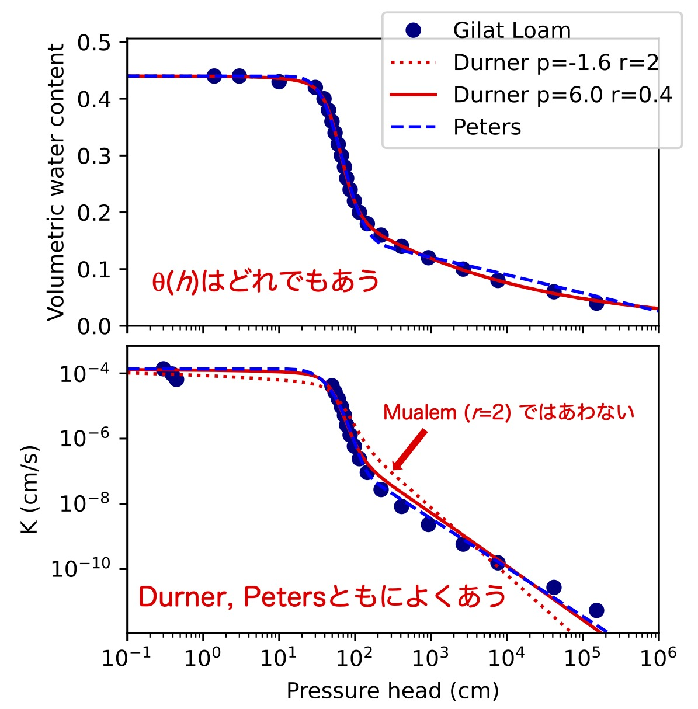
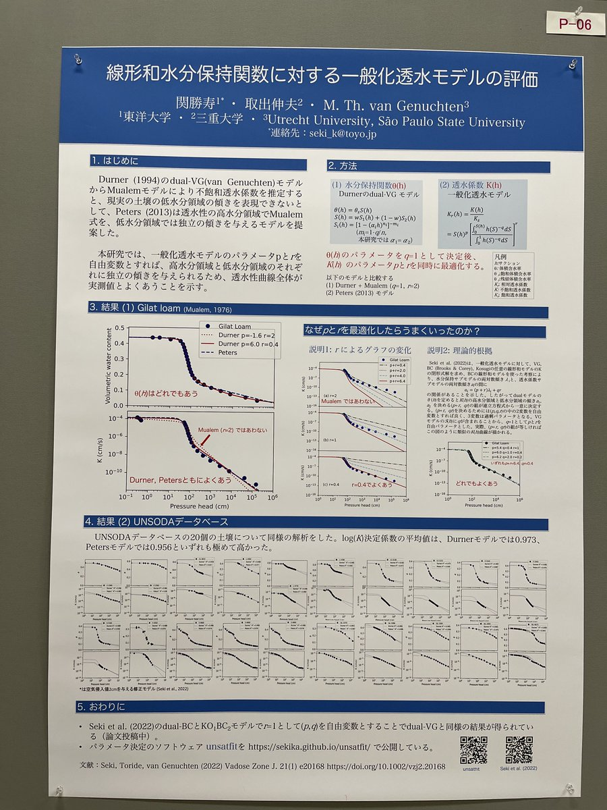

線形和水分保持関数に対する一般化透水モデルの評価
関勝寿
, 取出伸夫, M. Th. van Genuchten. 線形和水分保持関数に対する一般化透水モデルの評価.
2022年度土壌物理学会大会
. 三重大学. 2022年10月29日
主要な結果

Durnerの線形和水分保持関数(dual-VGモデル)によって幅広い圧力の水分保持曲線をよくあらわすことができるが、Mualemモデルでは低水分領域の不飽和透水係数をあわせにくいという問題があった。一般化透水モデルによって自由パラメータを1つ増やすことによりこの問題が解決し、Petersのモデルと同等の透水性関数の表現力を持つことが明らかになった。
要旨
要旨をダウンロードする (PDF)
ポスター

ポスターをダウンロードする (PDF)
関連情報
パラメータ決定のソフトウェア
unsatfit
Seki, K., Toride, N., & Th. van Genuchten, M. (2022)
Closed-form hydraulic conductivity equations for multimodal unsaturated soil hydraulic properties
. Vadose Zone J. 21; e20168.
関勝寿, 取出伸夫, M. Th. van Genuchten.
線形和水分保持関数に対するMualemモデルの不飽和透水係数
. 2021年度土壌物理学会大会. オンライン. 2021年10月30日
Copyright (C) 2022 Katsutoshi Seki. All Rights Reserved.